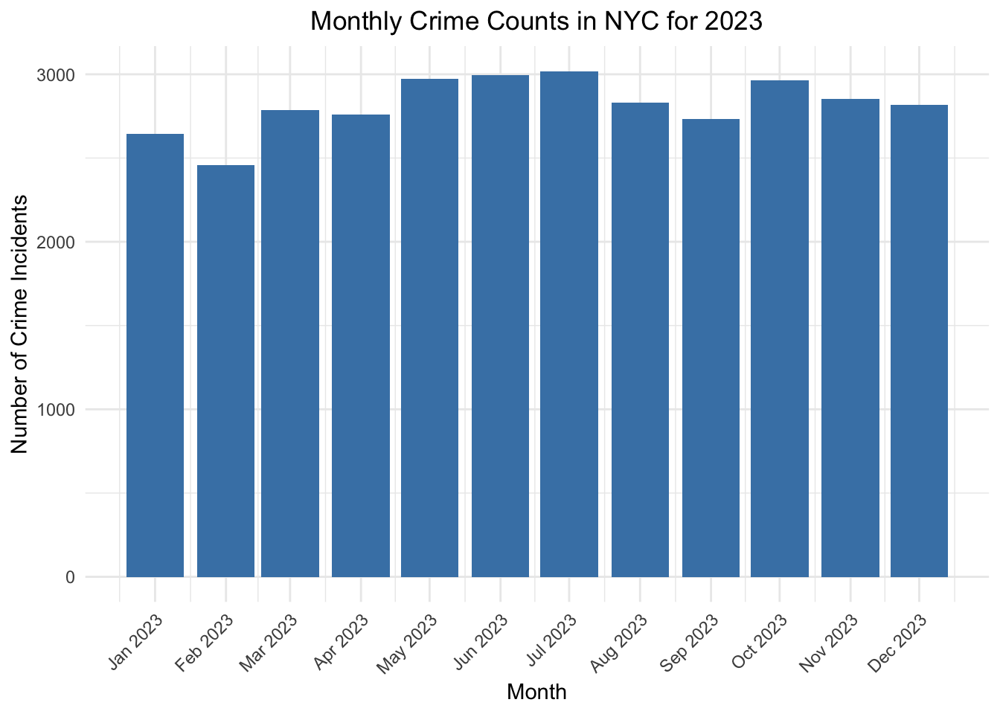
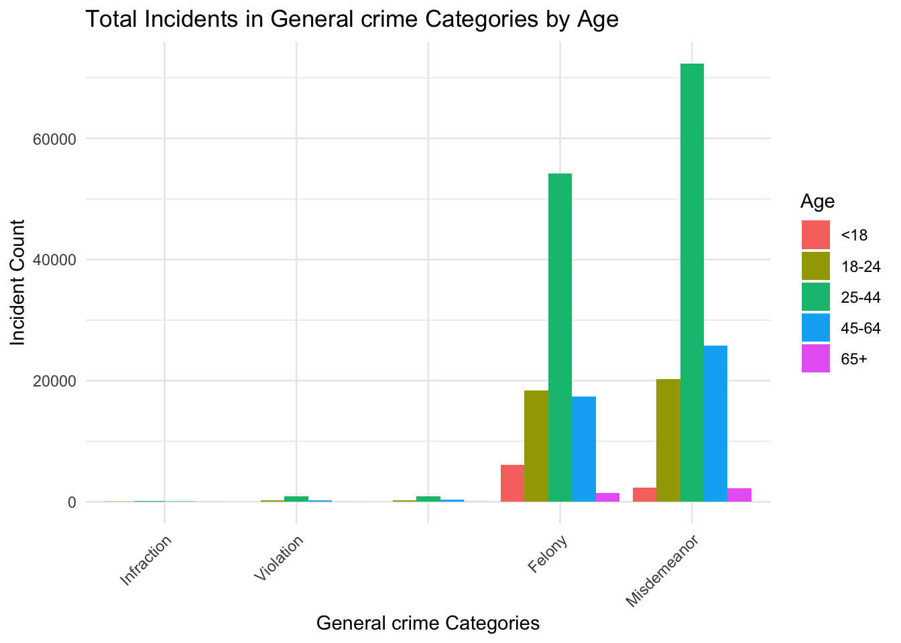

Model
check for normality

We found that some of the data are not normal distribution, so that we need to use the glm model to find the relationships.
model
Call:
glm(formula = y ~ temp + conditions + AGE_GROUP + PERP_SEX +
PERP_RACE + ARREST_BORO, family = poisson(), data = df_y1)
Coefficients:
Estimate Std. Error z value Pr(>|z|)
(Intercept) -2.4476391 0.0403540 -60.654 < 2e-16
temp 0.0018785 0.0002867 6.552 5.66e-11
conditionsOvercast -0.0115196 0.0171780 -0.671 0.502471
conditionsPartially cloudy 0.0039271 0.0058842 0.667 0.504519
conditionsRain 0.0510958 0.0091462 5.587 2.32e-08
conditionsRain, Overcast -0.0692735 0.0078194 -8.859 < 2e-16
conditionsRain, Partially cloudy -0.0406722 0.0056521 -7.196 6.21e-13
conditionsSnow, Partially cloudy 0.0360911 0.0410706 0.879 0.379534
conditionsSnow, Rain, Overcast 0.0078042 0.0397929 0.196 0.844516
conditionsSnow, Rain, Partially cloudy 0.0741653 0.0204620 3.625 0.000289
AGE_GROUP18-24 0.9647019 0.0120088 80.333 < 2e-16
AGE_GROUP25-44 1.9685680 0.0112981 174.239 < 2e-16
AGE_GROUP45-64 1.0515529 0.0119073 88.312 < 2e-16
AGE_GROUP65+ -0.3570714 0.0196846 -18.140 < 2e-16
PERP_SEXM 1.2404339 0.0055979 221.588 < 2e-16
PERP_SEXU -0.7623630 0.0176719 -43.140 < 2e-16
PERP_RACEASIAN / PACIFIC ISLANDER 0.9712693 0.0387947 25.036 < 2e-16
PERP_RACEBLACK 2.5922644 0.0378730 68.446 < 2e-16
PERP_RACEBLACK HISPANIC 1.3241317 0.0383212 34.554 < 2e-16
PERP_RACEUNKNOWN 0.3285885 0.0423546 7.758 8.63e-15
PERP_RACEWHITE 1.3091509 0.0383328 34.152 < 2e-16
PERP_RACEWHITE HISPANIC 2.0453470 0.0379695 53.868 < 2e-16
ARREST_BOROK 0.1021808 0.0059168 17.270 < 2e-16
ARREST_BOROM -0.0476081 0.0061500 -7.741 9.85e-15
ARREST_BOROQ -0.1396608 0.0063282 -22.070 < 2e-16
ARREST_BOROS -1.2997387 0.0109290 -118.926 < 2e-16
(Intercept) ***
temp ***
conditionsOvercast
conditionsPartially cloudy
conditionsRain ***
conditionsRain, Overcast ***
conditionsRain, Partially cloudy ***
conditionsSnow, Partially cloudy
conditionsSnow, Rain, Overcast
conditionsSnow, Rain, Partially cloudy ***
AGE_GROUP18-24 ***
AGE_GROUP25-44 ***
AGE_GROUP45-64 ***
AGE_GROUP65+ ***
PERP_SEXM ***
PERP_SEXU ***
PERP_RACEASIAN / PACIFIC ISLANDER ***
PERP_RACEBLACK ***
PERP_RACEBLACK HISPANIC ***
PERP_RACEUNKNOWN ***
PERP_RACEWHITE ***
PERP_RACEWHITE HISPANIC ***
ARREST_BOROK ***
ARREST_BOROM ***
ARREST_BOROQ ***
ARREST_BOROS ***
---
Signif. codes: 0 '***' 0.001 '**' 0.01 '*' 0.05 '.' 0.1 ' ' 1
(Dispersion parameter for poisson family taken to be 1)
Null deviance: 293418 on 45671 degrees of freedom
Residual deviance: 80001 on 45646 degrees of freedom
AIC: 213437
Number of Fisher Scoring iterations: 5the first model we regress contains all kinds of crimes, we found that the temperature has a small, positive coefficient, indicating that as temperature increases, the number of incidents tends to increase slightly. However, the relatively high residual deviance and AIC suggest that there is still unexplained variance, and perhaps we could improve with additional or different predictors, interaction terms, or considering another type of model.
Call:
glm(formula = y ~ temp + conditions + AGE_GROUP + PERP_SEX +
PERP_RACE + ARREST_BORO, family = poisson(), data = df_y)
Coefficients:
Estimate Std. Error z value Pr(>|z|)
(Intercept) -0.8977048 0.0922124 -9.735 < 2e-16
temp 0.0016363 0.0007352 2.226 0.026037
conditionsOvercast -0.0907088 0.0445114 -2.038 0.041562
conditionsPartially cloudy 0.0211469 0.0151841 1.393 0.163711
conditionsRain -0.0946377 0.0245205 -3.860 0.000114
conditionsRain, Overcast -0.0840488 0.0202062 -4.160 3.19e-05
conditionsRain, Partially cloudy 0.0385974 0.0145396 2.655 0.007939
conditionsSnow, Partially cloudy -0.0764934 0.1068119 -0.716 0.473898
conditionsSnow, Rain, Overcast -0.0633882 0.1081642 -0.586 0.557851
conditionsSnow, Rain, Partially cloudy -0.0866034 0.0543322 -1.594 0.110945
AGE_GROUP18-24 0.2481552 0.0327423 7.579 3.48e-14
AGE_GROUP25-44 0.8533512 0.0307779 27.726 < 2e-16
AGE_GROUP45-64 0.2888490 0.0323432 8.931 < 2e-16
AGE_GROUP65+ -0.1171685 0.0465647 -2.516 0.011861
PERP_SEXM 0.4531978 0.0125449 36.126 < 2e-16
PERP_SEXU -0.3613053 0.0428129 -8.439 < 2e-16
PERP_RACEASIAN / PACIFIC ISLANDER 0.4027098 0.0874486 4.605 4.12e-06
PERP_RACEBLACK 1.0856385 0.0852922 12.728 < 2e-16
PERP_RACEBLACK HISPANIC 0.4245223 0.0867473 4.894 9.89e-07
PERP_RACEUNKNOWN 0.1692383 0.0982584 1.722 0.085001
PERP_RACEWHITE 0.4057124 0.0868887 4.669 3.02e-06
PERP_RACEWHITE HISPANIC 0.8141922 0.0855113 9.521 < 2e-16
ARREST_BOROK -0.0172860 0.0150551 -1.148 0.250892
ARREST_BOROM -0.1761448 0.0162106 -10.866 < 2e-16
ARREST_BOROQ -0.1110504 0.0157718 -7.041 1.91e-12
ARREST_BOROS -0.6584448 0.0294221 -22.379 < 2e-16
(Intercept) ***
temp *
conditionsOvercast *
conditionsPartially cloudy
conditionsRain ***
conditionsRain, Overcast ***
conditionsRain, Partially cloudy **
conditionsSnow, Partially cloudy
conditionsSnow, Rain, Overcast
conditionsSnow, Rain, Partially cloudy
AGE_GROUP18-24 ***
AGE_GROUP25-44 ***
AGE_GROUP45-64 ***
AGE_GROUP65+ *
PERP_SEXM ***
PERP_SEXU ***
PERP_RACEASIAN / PACIFIC ISLANDER ***
PERP_RACEBLACK ***
PERP_RACEBLACK HISPANIC ***
PERP_RACEUNKNOWN .
PERP_RACEWHITE ***
PERP_RACEWHITE HISPANIC ***
ARREST_BOROK
ARREST_BOROM ***
ARREST_BOROQ ***
ARREST_BOROS ***
---
Signif. codes: 0 '***' 0.001 '**' 0.01 '*' 0.05 '.' 0.1 ' ' 1
(Dispersion parameter for poisson family taken to be 1)
Null deviance: 18567 on 17387 degrees of freedom
Residual deviance: 11113 on 17362 degrees of freedom
AIC: 52825
Number of Fisher Scoring iterations: 5in this model, we delete the predictor of wind speeds and focuses on the Assault 3 incidents. This time, the R squared gets better and AIC getting lower.
Call:
glm(formula = y ~ temp, family = poisson(), data = df_y1)
Coefficients:
Estimate Std. Error z value Pr(>|z|)
(Intercept) 0.6507229 0.0115772 56.207 <2e-16 ***
temp 0.0010236 0.0006909 1.481 0.138
---
Signif. codes: 0 '***' 0.001 '**' 0.01 '*' 0.05 '.' 0.1 ' ' 1
(Dispersion parameter for poisson family taken to be 1)
Null deviance: 18567 on 17387 degrees of freedom
Residual deviance: 18565 on 17386 degrees of freedom
AIC: 60229
Number of Fisher Scoring iterations: 5Then, we do the regression with only temperature’s effect on the daily crime rate, we found that coefficients are extremely low and not significant anymore. This shows that other demographic predictors has more influence to the assault 3 crime rate.
In conclusion, we need to think about better model that could fit with our data.
```